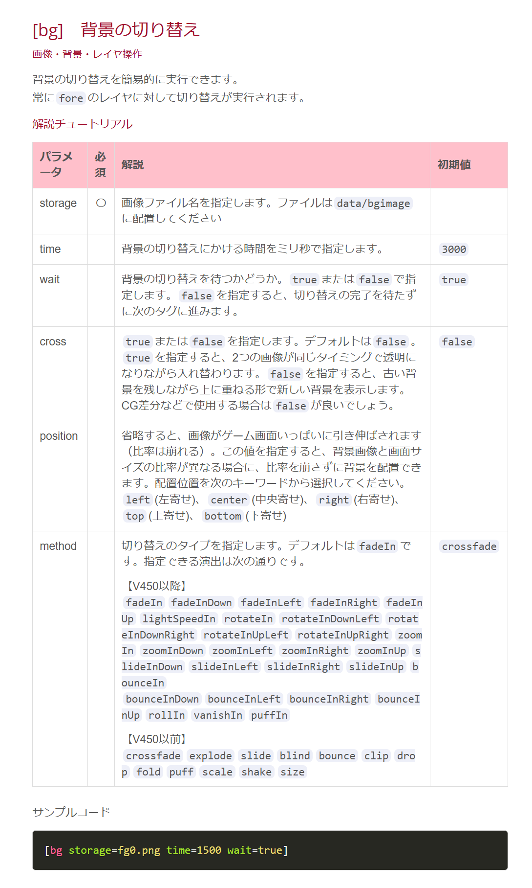
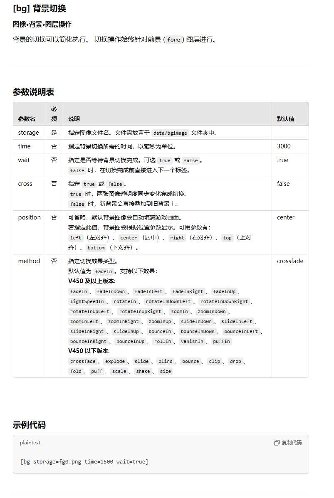
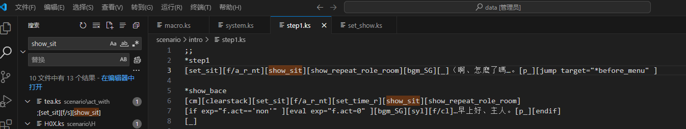
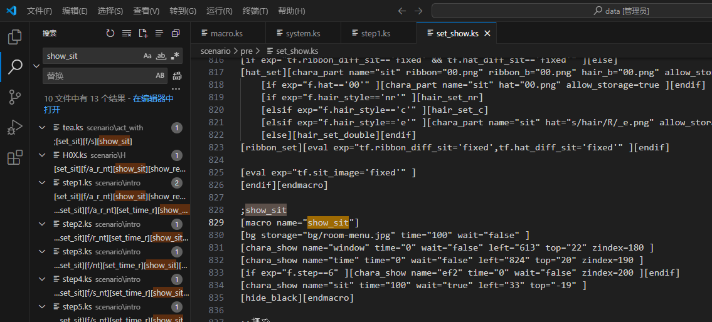

Teaching Feeling自改基础 ——第二讲
本帖是Teaching Feeling改版制作基础讲解的第二讲——背景 - - - - - - - - - - - - - -

- - - - - - - - - - - - - - Ca清（id：T_gas）编辑此贴发布并保持贴子更新 本贴是2023.4.23版 本贴在百度贴吧——teaching_feeling吧首发且保持最新 本贴为所有吧友提供信息支持 转载要求注明来源及编者，编者保留该帖一切权利
---- 前言 - - - - 本系列作者——Ca清（id：T_gas），笔者——Ca清（id：T_gas） 主要资料——《TF改版教程【入门级】》（或《TeachingFeeling改版入门教程》），作者——不是很擅长社交的坚果骑士
---- 第二讲——背景 - - - -
---- 游戏背景 - - - - 在TyranoScript中，存在着各种各样既定的tag（标签），这些tag起到了代码语句的作用，例如，游戏的背景显示使用[bg]标签   接下来看游戏中使用的实例，如下图，这是我们结束开场剧情进入第1天的代码  如上图高亮所示，[show_sit]是作者自定义的标签，其导向为下图  可见[show_sit]是一个功能块，其首个功能即为显示背景，依据路径，我们可以发现对应的背景文件无误
---- 修改背景 - - - - 按照上一讲中所提到，请按照游戏进行的规律，逐一排查标签的功能，注意tag名称本身的意义有助于迅速发现相关功能。 ①整体替换，如果想将游戏中某个场景全部的替换为某个自定场景，按照第1讲内容找到对应文件进行同名替换即可 ②精确替换，如果我只想修改游戏开场时的吃饭背景，对其背景进行整体替换的话，将会修改整个游戏中的示范场景的演示，使得被修改的背景完全替换原来的内容，有什么办法能够只关注这一事件中的背景呢？——
---- 附加内容 - - - - 一、本资料作者——不是很擅长社交的坚果骑士保留对《TF改版教程【入门级】》（或《TeachingFeeling改版入门教程》）的所有权利，未经许可任何人均不得侵权，作者联系方式，qq：2123879486 二、本系列主要使用Alternative_Life版进行演示，文件编辑及阅读主要使用Visual Studio Code 三、本系列主要使用的Alternative_Life版基于原版ver2.5.0，原版ver3.x与4.x文件结构及运行逻辑不同，并且阅读难度提升，建议使用2.5.x的稳定版本
本贴是2023.4.23版
历史版（累计有阅读数：0、点赞数：0、回复数：0）：